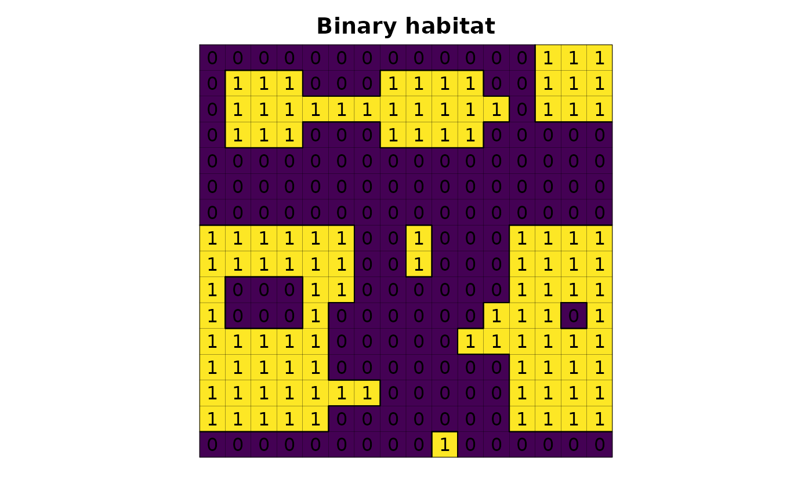

Calculate perimeter in meters and shape index.
Usage
lsm_perimeter(
input,
output = NULL,
zero_as_null = FALSE,
perimeter_round_digit = 0,
map_perimeter_area_ratio_index = FALSE,
map_shape_index = FALSE,
map_fractal_index = FALSE,
nprocs = 1,
memory = 300
)Arguments
- input
[character=""]
Habitat map, following a binary classification (e.g. values 1,0 or 1,NA for habitat,non-habitat) inside GRASS Data Base.- output
[character=""]
Map name output inside GRASS Data Base.- zero_as_null
[logical(1)=FALSE]
IfTRUE, the function treats non-habitat cells as null; ifFALSE, the function converts non-habitat zero cells to null cells.- map_perimeter_area_ratio_index
[character=""]
IfTRUE, the function treats.- map_shape_index
[character=""]
IfTRUE, the function treats.- map_fractal_index
[character=""]
IfTRUE, the function treats.#' @param nprocs[numeric()]- nprocs
[numeric()]- memory
[numeric()]
Examples
library(lsmetrics)
library(terra)
# read habitat data
r <- lsmetrics::lsm_toy_landscape(proj_type = "meters")
# plot
plot(r, legend = FALSE, axes = FALSE, main = "Binary habitat")
plot(as.polygons(r, dissolve = FALSE), lwd = .1, add = TRUE)
plot(as.polygons(r), add = TRUE)
text(r)

# find grass
path_grass <- system("grass --config path", inter = TRUE) # windows users need to find the grass gis path installation, e.g. "C:/Program Files/GRASS GIS 8.3"
# create grassdb
rgrass::initGRASS(gisBase = path_grass,
SG = r,
gisDbase = "grassdb",
location = "newLocation",
mapset = "PERMANENT",
override = TRUE)
#> gisdbase grassdb
#> location newLocation
#> mapset PERMANENT
#> rows 16
#> columns 16
#> north 7525600
#> south 7524000
#> west 234000
#> east 235600
#> nsres 100
#> ewres 100
#> projection:
#> PROJCRS["WGS 84 / UTM zone 23S",
#> BASEGEOGCRS["WGS 84",
#> ENSEMBLE["World Geodetic System 1984 ensemble",
#> MEMBER["World Geodetic System 1984 (Transit)"],
#> MEMBER["World Geodetic System 1984 (G730)"],
#> MEMBER["World Geodetic System 1984 (G873)"],
#> MEMBER["World Geodetic System 1984 (G1150)"],
#> MEMBER["World Geodetic System 1984 (G1674)"],
#> MEMBER["World Geodetic System 1984 (G1762)"],
#> MEMBER["World Geodetic System 1984 (G2139)"],
#> ELLIPSOID["WGS 84",6378137,298.257223563,
#> LENGTHUNIT["metre",1]],
#> ENSEMBLEACCURACY[2.0]],
#> PRIMEM["Greenwich",0,
#> ANGLEUNIT["degree",0.0174532925199433]],
#> ID["EPSG",4326]],
#> CONVERSION["UTM zone 23S",
#> METHOD["Transverse Mercator",
#> ID["EPSG",9807]],
#> PARAMETER["Latitude of natural origin",0,
#> ANGLEUNIT["degree",0.0174532925199433],
#> ID["EPSG",8801]],
#> PARAMETER["Longitude of natural origin",-45,
#> ANGLEUNIT["degree",0.0174532925199433],
#> ID["EPSG",8802]],
#> PARAMETER["Scale factor at natural origin",0.9996,
#> SCALEUNIT["unity",1],
#> ID["EPSG",8805]],
#> PARAMETER["False easting",500000,
#> LENGTHUNIT["metre",1],
#> ID["EPSG",8806]],
#> PARAMETER["False northing",10000000,
#> LENGTHUNIT["metre",1],
#> ID["EPSG",8807]]],
#> CS[Cartesian,2],
#> AXIS["(E)",east,
#> ORDER[1],
#> LENGTHUNIT["metre",1]],
#> AXIS["(N)",north,
#> ORDER[2],
#> LENGTHUNIT["metre",1]],
#> USAGE[
#> SCOPE["Navigation and medium accuracy spatial referencing."],
#> AREA["Between 48°W and 42°W, southern hemisphere between 80°S and equator, onshore and offshore. Brazil."],
#> BBOX[-80,-48,0,-42]],
#> ID["EPSG",32723]]
# import raster from r to grass
rgrass::write_RAST(x = r, flags = c("o", "overwrite", "quiet"), vname = "r", verbose = FALSE)
# perimeter
lsmetrics::lsm_perimeter(input = "r",
map_perimeter_area_ratio_index = TRUE,
map_shape_index = TRUE,
map_fractal_index = TRUE)
#> Converting zero as null
#> Calculation matrix
#> Counting edges to matrix
#> Calculating perimeter
#> Converting zeros to null
#> Identifying fragments
#> Calculation area
#> Assigning area
#> 0% 6% 12% 18% 25% 31% 37% 43% 50% 56% 62% 68% 75% 81% 87% 93% 100%
#> Cleaning data
#> Calculating perimeter area ratio index
#> Calculating shape index
#> Calculating fractal index
#> Cleaning data
# files
rgrass::execGRASS(cmd = "g.list", type = "raster")
#> r
#> r_fractal
#> r_perimeter
#> r_perimeter_area_ratio
#> r_shape
# import from grass to r
r_perimeter <- terra::rast(rgrass::read_RAST("r_perimeter", flags = "quiet", return_format = "SGDF"))
#> Creating BIL support files...
#> Exporting raster as floating values (bytes=4)
#> 0% 6% 12% 18% 25% 31% 37% 43% 50% 56% 62% 68% 75% 81% 87% 93% 100%
# plot
plot(r_perimeter, legend = FALSE, axes = FALSE, main = "Perimeter (m)")
plot(as.polygons(r, dissolve = FALSE), lwd = .1, add = TRUE)
plot(as.polygons(r), add = TRUE)
text(r_perimeter, cex = .5)
 # import from grass to r
r_perimeter_area_ratio <- terra::rast(rgrass::read_RAST("r_perimeter_area_ratio", flags = "quiet", return_format = "SGDF"))
#> Creating BIL support files...
#> Exporting raster as floating values (bytes=4)
#> 0% 6% 12% 18% 25% 31% 37% 43% 50% 56% 62% 68% 75% 81% 87% 93% 100%
# plot
plot(r_perimeter_area_ratio, legend = FALSE, axes = FALSE, main = "Perimeter-area ratio")
plot(as.polygons(r, dissolve = FALSE), lwd = .1, add = TRUE)
plot(as.polygons(r), add = TRUE)
text(r_perimeter_area_ratio, digits = 3, cex = .4)
# import from grass to r
r_perimeter_area_ratio <- terra::rast(rgrass::read_RAST("r_perimeter_area_ratio", flags = "quiet", return_format = "SGDF"))
#> Creating BIL support files...
#> Exporting raster as floating values (bytes=4)
#> 0% 6% 12% 18% 25% 31% 37% 43% 50% 56% 62% 68% 75% 81% 87% 93% 100%
# plot
plot(r_perimeter_area_ratio, legend = FALSE, axes = FALSE, main = "Perimeter-area ratio")
plot(as.polygons(r, dissolve = FALSE), lwd = .1, add = TRUE)
plot(as.polygons(r), add = TRUE)
text(r_perimeter_area_ratio, digits = 3, cex = .4)
 # import from grass to r
r_shape <- terra::rast(rgrass::read_RAST("r_shape", flags = "quiet", return_format = "SGDF"))
#> Creating BIL support files...
#> Exporting raster as floating values (bytes=8)
#> 0% 6% 12% 18% 25% 31% 37% 43% 50% 56% 62% 68% 75% 81% 87% 93% 100%
# plot
plot(r_shape, legend = FALSE, axes = FALSE, main = "Shape index")
plot(as.polygons(r, dissolve = FALSE), lwd = .1, add = TRUE)
plot(as.polygons(r), add = TRUE)
text(r_shape, digits = 3, cex = .4)
# import from grass to r
r_shape <- terra::rast(rgrass::read_RAST("r_shape", flags = "quiet", return_format = "SGDF"))
#> Creating BIL support files...
#> Exporting raster as floating values (bytes=8)
#> 0% 6% 12% 18% 25% 31% 37% 43% 50% 56% 62% 68% 75% 81% 87% 93% 100%
# plot
plot(r_shape, legend = FALSE, axes = FALSE, main = "Shape index")
plot(as.polygons(r, dissolve = FALSE), lwd = .1, add = TRUE)
plot(as.polygons(r), add = TRUE)
text(r_shape, digits = 3, cex = .4)
 # import from grass to r
r_fractal <- terra::rast(rgrass::read_RAST("r_fractal", flags = "quiet", return_format = "SGDF"))
#> Creating BIL support files...
#> Exporting raster as floating values (bytes=8)
#> 0% 6% 12% 18% 25% 31% 37% 43% 50% 56% 62% 68% 75% 81% 87% 93% 100%
# plot
plot(r_fractal, legend = FALSE, axes = FALSE, main = "Fractal dimension index")
plot(as.polygons(r, dissolve = FALSE), lwd = .1, add = TRUE)
plot(as.polygons(r), add = TRUE)
text(r_fractal, digits = 3, cex = .4)
# import from grass to r
r_fractal <- terra::rast(rgrass::read_RAST("r_fractal", flags = "quiet", return_format = "SGDF"))
#> Creating BIL support files...
#> Exporting raster as floating values (bytes=8)
#> 0% 6% 12% 18% 25% 31% 37% 43% 50% 56% 62% 68% 75% 81% 87% 93% 100%
# plot
plot(r_fractal, legend = FALSE, axes = FALSE, main = "Fractal dimension index")
plot(as.polygons(r, dissolve = FALSE), lwd = .1, add = TRUE)
plot(as.polygons(r), add = TRUE)
text(r_fractal, digits = 3, cex = .4)
 # delete grassdb
unlink("grassdb", recursive = TRUE)
# delete grassdb
unlink("grassdb", recursive = TRUE)